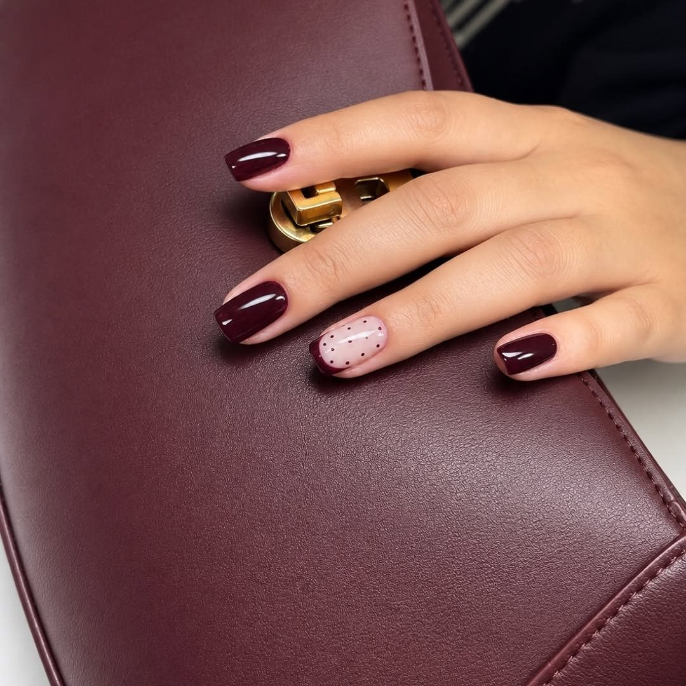

Tırnak tasarımı
Protez, jel ve akrilik tırnak; kalıcı oje ve nail art. Beğendiğiniz bir örneği gönderin, formu ve uygulamayı konuşalım.
Tasarımınızı paylaşınBeylikdüzü / Adnan Kahveci
Nail art, kalıcı oje ve tırnak tasarımı. Bir sonraki modelinizi birlikte seçelim.

Gerçek çalışmalarımızdan
Formu, rengi ve deseni sizinle birlikte seçelim. Beğendiğiniz çalışmayı randevu mesajınıza ekleyebilirsiniz.
Gloss’ta bakım
Protez, jel ve akrilik tırnak; kalıcı oje ve nail art. Beğendiğiniz bir örneği gönderin, formu ve uygulamayı konuşalım.
Tasarımınızı paylaşınKuru veya spa manikür ve pedikür seçenekleri. Güncel uygulama ayrıntılarını ve randevu uygunluğunu öğrenin.
Bakım için yazınKaş bakımı, ipek kirpik ve kirpik lifting seçenekleri. İhtiyaçlarınıza uygun uygulamayı birlikte değerlendirelim.
Bilgi alınGoogle yorumları
Herkes çok güler yüzlü ve yardımcılar. Şablon sistemle protez yaptık ve hem çok güzel iş çıktı hem de oldukça hızlıydı.
Herkes çok güler yüzlü ve çok ilgililer. Her gittiğimde memnun ayrılıyorum.
Bir arkadaşımın tavsiyesi üzerine gittim, yaklaşık 7 aydır gidiyorum ve çok çok memnunum. Her işlem sonrası çok memnun bir şekilde ayrılıyorum oradan.
Yorumlardan kısa alıntılar. Yazım ve noktalama düzenlenmiştir.
Google’da inceleyinBir sonraki randevunuz
İstediğiniz uygulamayı, beğendiğiniz tasarımı ve size uygun günleri Instagram’dan yazın.
Instagram’dan yazınBeylikdüzü / Adnan Kahveci
0530 521 68 01Randevu, güncel konum ve ücret bilgisi için bize ulaşabilirsiniz.
Salonu arayın